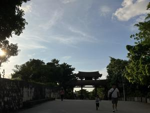
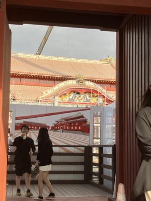
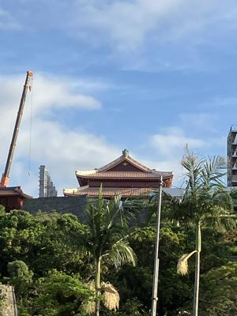

うるがいの話 ある日
最新: 新しい首里城【うるがいの話 ある日】とは 一日だけのプログです
『うるがいの話』の最新一日だけのプログで、通信料が少なく経済的だ。カニの画像をクリックすると全ての日付が載る『うるがいの話』サイトを表示します
|
|
【うるがいの話】 うるがい(ｳﾙｶﾞｲ urugai)とは、『もずくがに』の名前でとても大きくなります。 |
|---|---|
|
|
【カミマヤーの話】 猫のことを方言でマヤーといいます。カミマヤー（kamimayaa）とは、神の猫のことです。 |
|
【たながぁの音楽】 たながぁ（ﾀﾅｶﾞｰ tanagaa）とは手長えびのことで、何種類かあり大きいのは車 エビぐらいになります。 |

|
【ぶながぁの話】 ぶながぁ(ﾌﾞﾅｶﾞｰ bunagaa)とは、赤い髪の毛、赤い身体、そして身長は１ｍ２０ｃｍ ぐらい、川の蟹を食べているの目撃された。場所は沖縄県国頭郡大宜味村のと ある村僕の隣近所に住んでいる爺さんから、聞いた話です。 |
|
|
【ギーマの話】 ギーマ(giima)とは、山原の里山に咲くスズランに似た、 花を付けます。実は食べられます、 気が付くと口の周りが紫になっています。 |
2025年09月30日 (火）新しい首里城
16:28

洗濯ものを干しているオジー、オバーは畳の間で休んでいる。破
れまんじゅうを買おうとお店に行くが、人がいない。呼び鈴が置
かれているが、錆びて使えな。屋敷を廻りオバーに、買いたいと
合図すると、オバーは洗濯ものを干しているオジーに合図をする。
どうも、オジーが対応するようだ。１５０円を４個、購入する。
二人とも高齢でいつまでお店をやれるのか・・・・・。オジーは
補聴器をしていた！、私と一緒だ。お店の名前は、武村松月堂。
家で食べたが、美味しかった。
工事屋根が取れた首里城をみるため首里城公園へ行く、入場料は
もったいないので、チョット入口で正面をみる。新品だ

芸大からみる。観光客が、大勢いました。

明日から、ホームページの運用が変わるようだが通知が来ない！
もしかしたら、明日は『うるがいの話』のプログは更新できない
かもしれない。
２０２５年９月末をもちまして、「ＬａＣｏｏｃａｎミニプラン
（＠ｎｉｆｔｙホームページサービス）」の提供を終了させてい
ただくことになりました。
※提供終了日以降は、管理画面へのアクセスやページの閲覧、
ＦＴＰツールによるファイルのダウンロード・アップロードがで
きなくなります。ご注意ください。
プログのアップロードは、ＦＴＰツールで行ってけど！！！！。